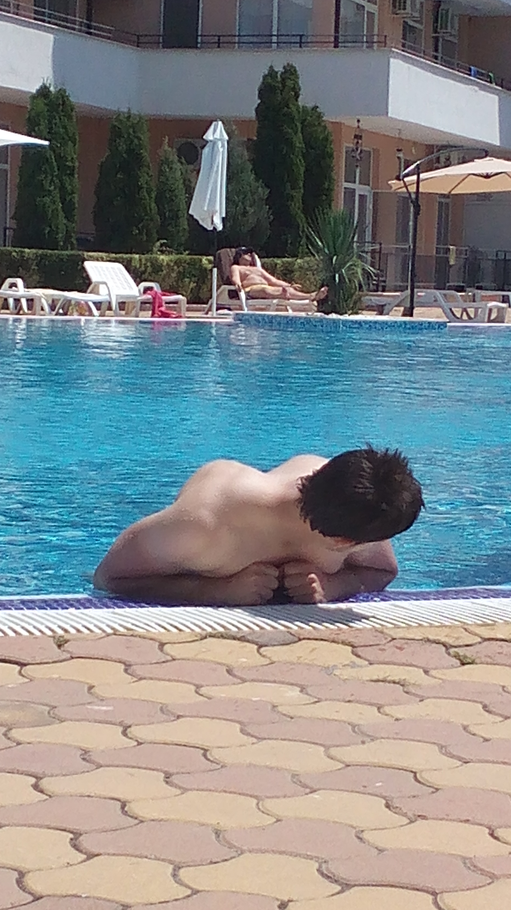
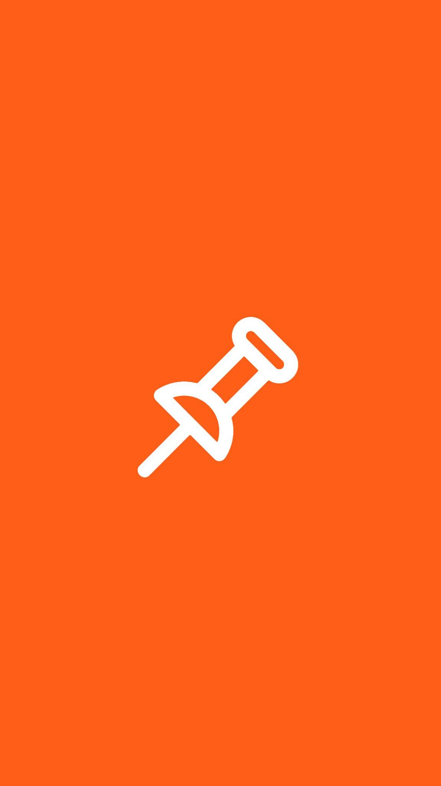
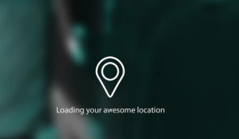
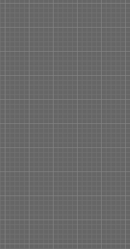

<!DOCTYPE html>
<html >
  <head>
    <meta charset="utf-8">
    <meta http-equiv="Content-Security-Policy" content="default-src *; script-src 'self' 'unsafe-inline' 'unsafe-eval' *; style-src  'self' 'unsafe-inline' *">
    <meta name="viewport" content="initial-scale=1, maximum-scale=1, user-scalable=no, width=device-width">
    <title>Tack</title>

    <link href="lib/ionic/css/ionic.css" rel="stylesheet">
    <link href="css/style.css" rel="stylesheet">
    <link rel="stylesheet" href="css/lessToCss.css">
    <link rel="stylesheet" href="css/ionicons.min.css">
    <!-- IF using Sass (run gulp sass first), then uncomment below and remove the CSS includes above
    <link href="css/ionic.app.css" rel="stylesheet">
    -->

    <!-- ionic/angularjs js -->
    <script src="lib/ionic/js/ionic.bundle.js"></script>
    <!---->
	<script src="js/ng-cordova.min.js"></script>
    <!-- cordova script (this will be a 404 during development) -->
    
    <!-- your app's js -->
    <!--<script src="js/app.js"></script>-->
    <!--<script src="js/services.js"></script>-->
    <script src="cordova.js"></script>
    <script src="js/jquery-1.11.3.min.js"></script>
    <script src="js/app.js"></script>
    <script src="js/tack.js"></script>
    <script src="js/jquery.flexslider.js"></script>
    <script src="js/html2canvas.js"></script>
  </head>
  <body ng-app="ionicApp" ng-controller="shareController">
  	<canvas class="c" hidden></canvas>
    <!--<div class="imageHolder" style="position: absolute;top:0;left:0;">
  	
  	
  </div>-->
    <ion-nav-view></ion-nav-view>
    <!---->
     <script id="templates/tabs.html" type="text/ng-template">
      <ion-tabs class="tabs-icon-top tabs-positive">

        <ion-tab title="Picture" icon="ion-home" href="#/tab/picture">
          <ion-nav-view name="picture-tab"></ion-nav-view>
        </ion-tab>

      </ion-tabs>
    </script>

    <script id="templates/pictureScreen.html" type="text/ng-template">
      <ion-view view-title="Picture" class="hideTabBar">
       		<div class="pictureScreen">
	      <!--<span id="lat"></span> ion-android-share-alt
	      <span `id="lng"></span> flex-active-slide -->
	     	<li ng-click="getImageFromGallery()" style="position:absolute;bottom:7px;left:7px;" class="ion-image ionicicons goToShare" ></li>
	     	<!--<a onclick="takePicture();" style="position:absolute;top:0;right:0;" class="button icon goToShare">Camera</a> -->
	     	<li onclick="takePicture();" style="position:absolute;top:5px;right:7px;" class="ion-android-camera ionicicons goToShare" ></li>
            <!--<a ng-click="getImageFromGallery()" style="position:absolute;bottom:0;left:0;" class="button icon goToShare">Gallery</a>-->
                <!--<button style="position:absolute;left:0;bottom:0;" ng-click="getImageSaveContact()">
                    gallery
                </button>-->
               <!-- -->
        	<a onclick="getImage();" style="position:absolute;bottom:5px;right:10px;" class="ion-android-share-alt ionicicons goToShare"  href="#/tab/share"></a>
        	<!---->
	      	
	      	<div class="flexslider">
			  <ul class="slides">
			   	<!--<li>
			      
			    </li>
			   
			    <li>
			      
			    </li>
			    <li>
			      
			    </li>
			    <li>
			      
			    </li>-->
			  </ul>
			</div>
			<div class="stickerHolder">
				
			</div>
			<div hidden class='loaderHolder'></div>
			<div hidden class='gpsCoordsLoading'>Loading your location </div>
			<div id="tempImage" style="z-index:99999;position: absolute; left:0;top:0;text-align: center;width:100px;height:186px;
			 border:1px solid black;background-color:white;" hidden>
				
			</div>
			<!--<button ng-click="takePicture()" style="position:absolute;left:0;bottom:10px;width: 100px;height:50px;">OK</button>-->
			<!--
			
			
			
			-->
		</div>
      </ion-view>
    </script>

    <script id="templates/shareScreen.html" type="text/ng-template">
      <ion-view view-title="Share">
      
			<div class="shareScreen" >
				<!--
				<div class="shareButtonsWrapper">
					<div></div>
					<div></div>
					<div></div>
					<div><button class="button share-anywhere" ng-click="shareAnywhere()">Share anywhere</button></div>
				</div>-->
				<!--<button class="button" ng-click="shareViaInstagram()">Share on Instagram</button>-->
				<div class="infoLines">
					
				</div>
				<div class="separator"></div>
				<div ng-click="shareViaFacebook()" class="fbButton">
					<span class="media">Facebook</span><a class="ion-ios-arrow-right ionicicons shareArrows"></a>
				</div>
				<div ng-click="shareViaTwitter()" class="twitterButton">
					<span class="media">Twitter</span><a class="ion-ios-arrow-right ionicicons shareArrows"></a>
				</div>
				<div ng-click="shareAnywhere()" class="shareButton"><p>Share</p></div>
				<a href="#/tab/picture"><div class="cancelButton"><p>Cancel</p></div></a>
		</div>
		
         <!--<a style="position:absolute;bottom:0;left:0;padding:10px 25px 10px 10px;" class="ion-ios-arrow-back ionicicons" href="#/tab/picture"></a>-->
      </ion-view>
    </script>
    	
  </body>
 <!--<link rel="stylesheet" href="css/jquery-ui.css">-->
 <!--<script src="js/jquery-touch-punch.js"></script>-->
 <!--<script src="js/jquery-ui.js"></script>-->
<script>
 /*
  
 $(function() {
  $('.canvas1').draggable({cursor: 'move', containment: '#canvas', stop: function() {

        var cont = $('#canvas').offset();

        var img = $(this).offset();

        //$('#xy').text('x-axis :' + (img.left - cont.left) + ', y-axis :' + (img.top -           cont.top));

     }});

   });*/
</script>
</html>